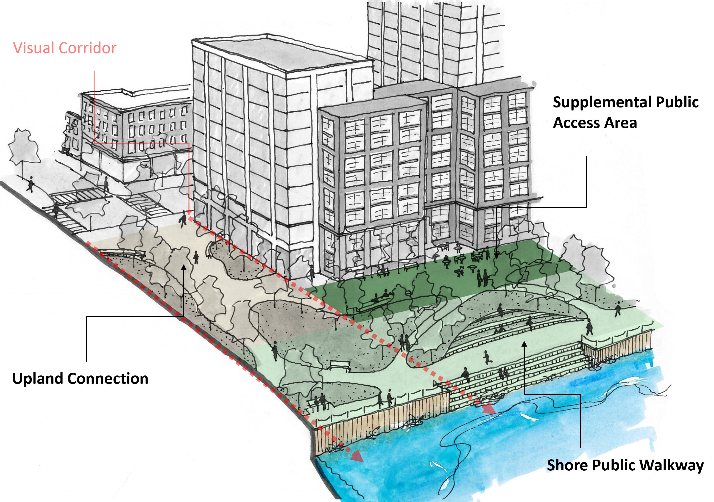

New York City is one of the few municipalities in the country that requires waterfront public access as a condition of some forms of development. Medium to high density residential, commercial, and community facility developments must provide
and maintain publicly-accessible space along the waterfront that is physically and visually connected to upland neighborhoods. This requirement is rooted in the long-standing public trust doctrine which ensures the public’s access to the City’s
waterfronts and waterways.
New York City adopted special zoning regulations affecting waterfront
development in 1993. Waterfront zoning (Article VI, Chapter 2 of the Zoning
Resolution) addresses the form, size and location of new buildings as well as
the amount and quality of publicly accessible space required along the waterfront.
The regulations apply to properties that are located within a waterfront block,
which is a block adjacent to or intersected by the shoreline. When there is an
opportunity to coordinate multiple waterfront public access areas, a Waterfront
Access Plan (WAP) is created and may contain public access modifications that
respond to the geography’s site conditions.

Waterfront zoning regulations were last modified in 2009 to expand
the design standards and promote a wider variety of public access areas.
For more information on how waterfront zoning maximizes the public’s access to,
and enjoyment of, the city’s waterfront resources while enabling appropriate
redevelopment along the shoreline, visit the Department of City Planning’s page on
Waterfront Zoning.